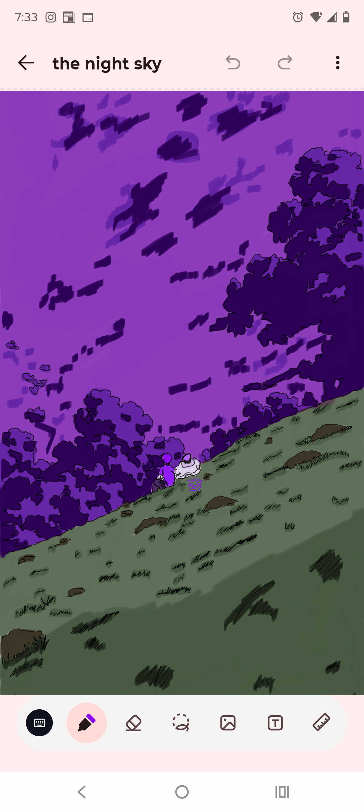
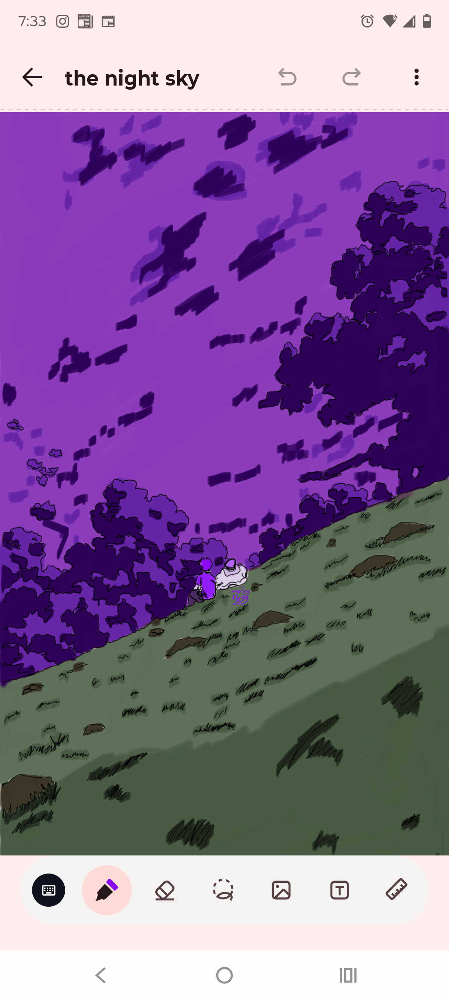

Welcome to the "prototype" online art showcase.
All art showcased can be found on my instagram @your-instagram-handle.
This is essentialy all my art I have made to showcase my skills and to build my own portfolio.
this is the first image on the showcase there isnt anything special about it I just selected a image at random, one thing that I hope you notice is the meanings that go with the art.
This artpiece is meant to represent how one person can have varius "masks" that others know you by but never really seeing who is underneath.
 

This second image is a difrent perspective, instead of the focus being on the person its on the vastness of the sky and how sometimes you just need to be alone to truly put things into perspective and to just take in the veiw. one thing that you will notice going foward is one to three characters that constanly pop up, they are in a sence "self inserts". I do this because it allows me to express myself in a way words cannot. more info on these characters will be presented in the other artworks.